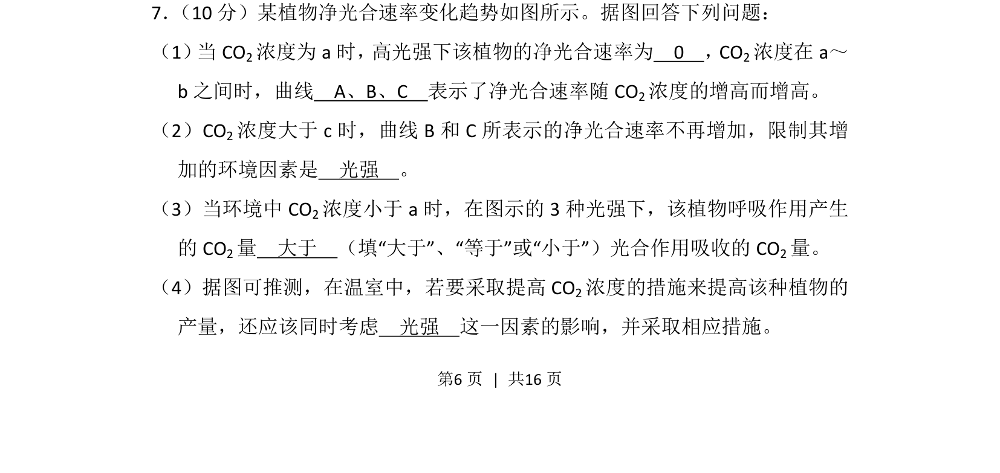
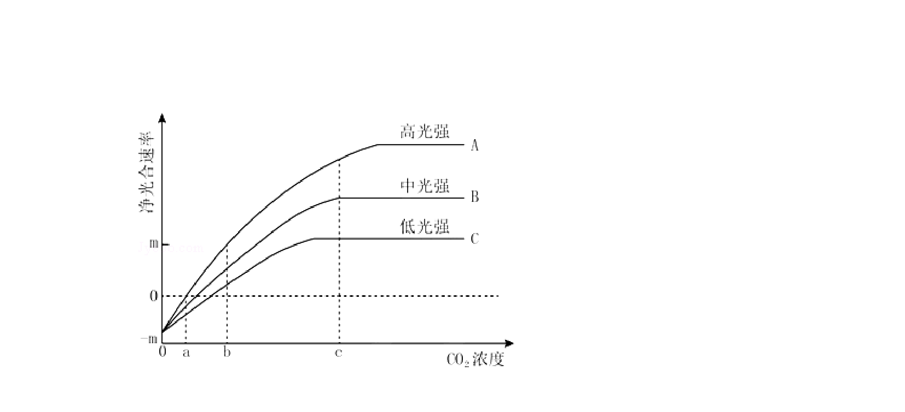
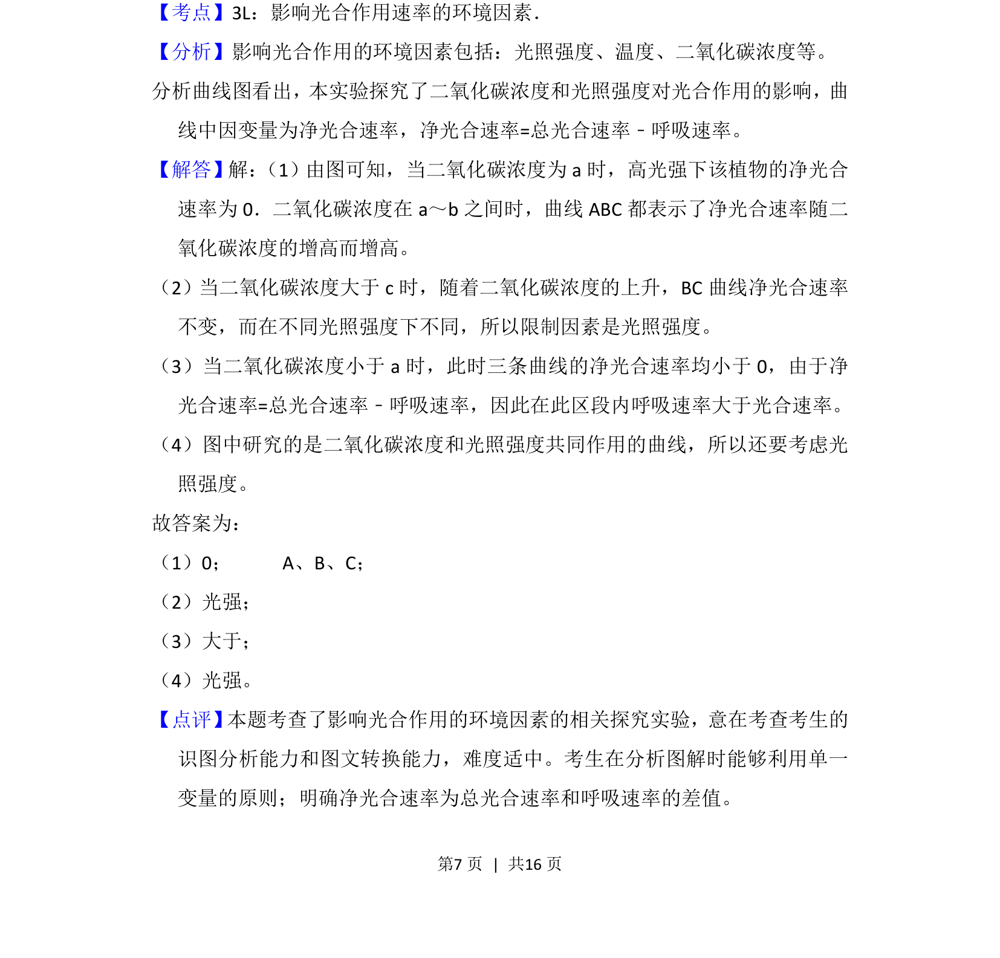

考点：光合作用 净光合速率 光强 CO2浓度
光合作用
净光合速率
光强
CO2浓度


该题通过曲线图分析光强和CO2浓度对植物净光合速率的影响，考查光合作用与呼吸作用关系。

📄 原 PDF 第 6 页：素材/真题/吉林/2008-2024·（吉林）生物高考真题/2014年高考生物试卷（新课标Ⅱ）（解析卷）.pdf
素材/真题/吉林/2008-2024·（吉林）生物高考真题/2014年高考生物试卷（新课标Ⅱ）（解析卷）.pdf